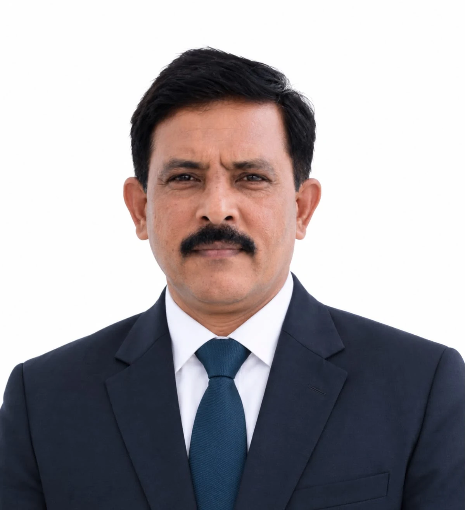

Chairman
Jyothykumar K
At Surabhi, we believe dairy farming grows stronger when farmers can learn from one another and work together. Our purpose is to support that co-operation, care for our animals and create lasting opportunities for farming families.
Draft message · Pending approval